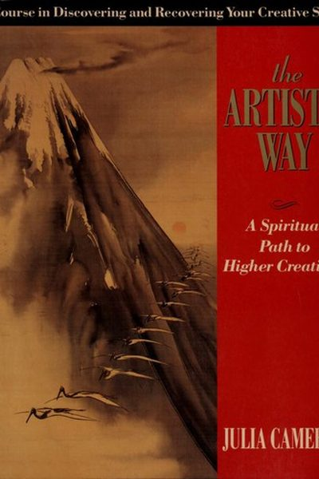

Library › Creativity
The Artist's Way — Summary & Key Lessons

The 12-week classic that unblocks creativity — one page of morning writing at a time.
📖 OPEN THE FULL INTERACTIVE BREAKDOWN →🌐 Read it in Hindi, Hinglish, Gujarati, Tamil & 22 more languages — free, with audio.
💡 The Big Idea
Julia Cameron's 12-week program is the most famous creativity recovery course in the world, used by millions. Her diagnosis: we are all creative, but we are blocked — by our inner critic, by depletion, and by the belief that art is for 'real artists.' The prescription is simple and mechanical: write three pages by hand every morning, take yourself on a solo Artist Date every week, and let the blocked channel clear itself. Creativity, she insists, is like the tide — it flows when you get out of its way.
🧠 The 6 Key Lessons
Lesson 1: Morning Pages: Drain the Brain
The Basic Tools
Every morning, before anything else, write three pages of longhand stream-of-consciousness — about anything, no editing, no judgment. Morning Pages are not art; they are a brain drain that empties out worry, grudge and chatter so your real creative self can be heard underneath.
📖 Example: Cameron's students who 'have no time' discover the pages take 25 minutes and return far more — clarity, calm, and ideas that were buried under mental noise. Writers use them to unstall; non-writers use them to unstress. Read the full example →
⚡ Do this: Set your alarm 25 minutes earlier tomorrow. Write 3 pages by hand about anything. Do not reread them for a week.
Lesson 2: The Artist Date: Fill the Well
The Basic Tools
Once a week, take yourself on a solo expedition — somewhere that delights you: a museum, a plant nursery, a stationery shop, a long walk. No partners, no 'useful' errands. This is not about producing; it is about filling the inner well of images and wonder that creative work drains.
📖 Example: A burnt-out designer Cameron coached began weekly solo trips to fabric markets. Within a month, colour combinations she saw on those trips were appearing in her work — the well had been refilled. Read the full example →
⚡ Do this: Book a 2-hour solo Artist Date this week. Treat it like a meeting with your most important client: you.
Lesson 3: Meet Your Inner Censor
Week 1–3: Unblocking
Inside every blocked creator sits a Censor — a harsh inner critic that calls your work stupid, selfish and embarrassing before you even start. Cameron's move: don't argue with it, just write it down and keep going. Once the critic is on the page, it loses its power over the page.
📖 Example: Cameron tells of a woman who wanted to paint but heard 'you're not talented enough' every time she picked up a brush. She wrote that sentence every morning in her Pages; by week four the voice had gone quiet enough for her to finish her first canvas. Read the full example →
⚡ Do this: Name your critic. Every time it speaks this week, write down exactly what it said — then add: 'Noted. Next page.'
Lesson 4: The Creative Cluster: Leaps of Faith
Weeks 4–6: Trust
When you commit to your creative life, Cameron promises, strange synchronicities appear — helpful people, lucky chances, odd coincidences. She calls this the Creative Cluster. It is not magic; it is what happens when your attention finally points at your dream and you start walking toward it.
📖 Example: A would-be screenwriter Cameron coached started doing Pages and Artist Dates; within weeks, a stranger at a coffee shop mentioned an opening in a writing program — exactly what she needed. She had been walking past that shop for years. Read the full example →
⚡ Do this: Commit to one creative goal in writing this week — and keep a 'coincidence log' of every lucky break that follows.
Lesson 5: Shadow Artists: Claim the Real Thing
Weeks 10–12: Recovery
Many people orbit their dream without touching it: the 'writer' who only edits others, the 'musician' who only manages bands, the artist who works in advertising. Cameron calls them shadow artists. The cure is to claim your identity directly — do the thing itself, even badly, even small.
📖 Example: A chef who secretly wanted to paint spent years cooking professionally. When she finally took a Saturday watercolour class, she wept — and a year later was selling her paintings. The shadow had become the light. Read the full example →
⚡ Do this: Ask: What am I doing one step away from? Take the direct step this month — even a tiny, unpaid, amateur one.
Lesson 6: Morning Pages Drain the Mind's Static
The Basic Tools
Cameron's foundational practice: write three pages of stream-of-consciousness every morning before anything else. The pages are not art — they are mental plumbing that drains worries, noise and self-criticism so the real creative work underneath can surface. Doing it daily, even badly, is the point.
📖 Example: Writers who kept morning pages for a month reported quieter minds and sharper ideas later in the day — the same worries that used to hijack their work hours had already been emptied onto the page. The practice doesn't produce brilliance; it removes what… Read the full example →
⚡ Do this: Write three unedited pages every morning for one week — no rereading, no judging, no skipping.
✅ 5-Step Action Plan
- Write Morning Pages (3 handwritten pages) for 7 days straight.
- Take one solo Artist Date this week — no companions, no errands.
- Write down every line your inner critic says — then keep working anyway.
- Commit to one creative goal in writing and log the coincidences.
- Identify your shadow art and take one direct step toward the real thing.
⚠️ When This Doesn't Work
Cameron's 'morning pages, artist's dates' is the most beloved creativity practice ever — and Secret is what happens when creative expression is freed from all consequence: the anonymous app let everyone 'express their truth' without accountability, and the 'creative community' became a sewer of cruelty that collapsed under its own toxicity. Unlocking creativity without unlocking responsibility doesn't free the artist; it frees the troll. The Artist's Way works because it's private and accountable to yourself. The moment expression goes public with zero accountability, it stops being art.
💀 The Graveyard Proves It
🤫 Secret — The Founder Took Profits While the App Died. Burn: $35M raised; shut in 16 months. Read the full case study →
💬 Best Quotes from The Artist's Way
- “The creative process is a spiritual process.”
- “As we create, we discover ourselves.”
- “Leap, and the net will appear.”
Interactive version: mark lessons as read, listen in your language, share quote cards.